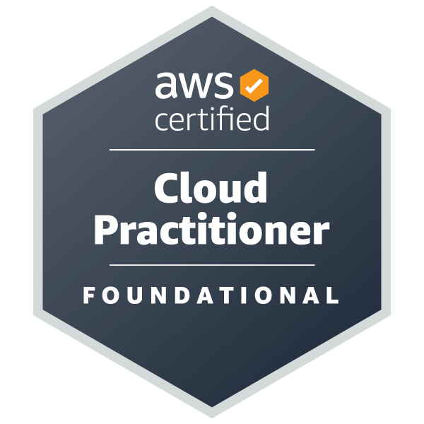
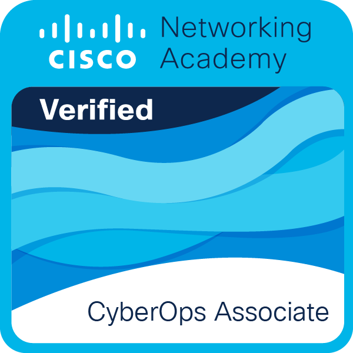
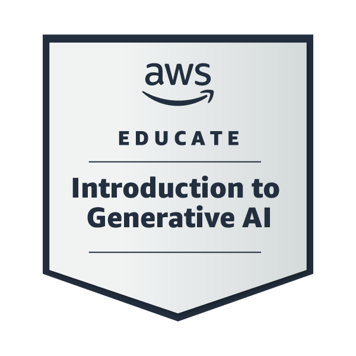
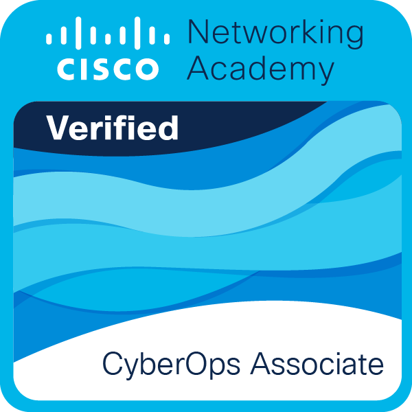
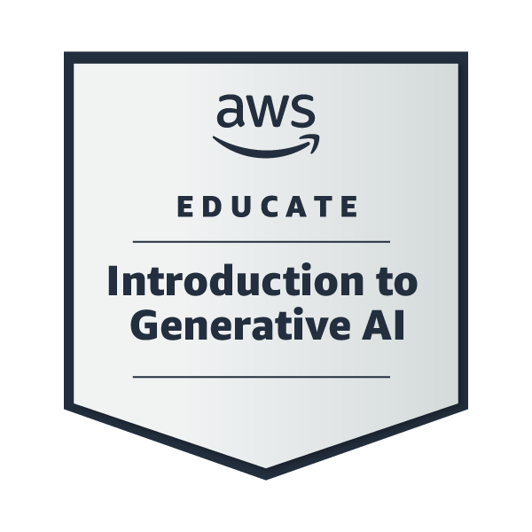

About Me
Welcome to my portfolio! I am a passionate IT student with a focus on cloud computing and cybersecurity.
I am currently seeking an entry level role in the tech sector. Since 2020 I have completed an HNC in Computing and self studied for certifications in cyber security and cloud.
Certifications
- AWS Certified Cloud Practitioner
- CompTIA Security +
- Cisco CyberOps Associate
Key Skills
- Configuration of AWS services; S3 buckets, Relational/Non-relational Databases, Generative AI, Identity and Access Management
- In depth networking knowledge: TCP/IP, OSI, ARP, DHCP, DNS, STP
- Confident using Windows and Linux OS
- Sound understanding of compliance frameworks and legislation: NIST, GDPR, ISO 27000
- Examining packet captures using Wireshark
- Network simululation using Cisco Packet Tracer
- Competent using Linux and Cisco CLI
- Remote logging using SSH via Putty
- Familarity using virtual machines - VMWare, Virtual Box

 


